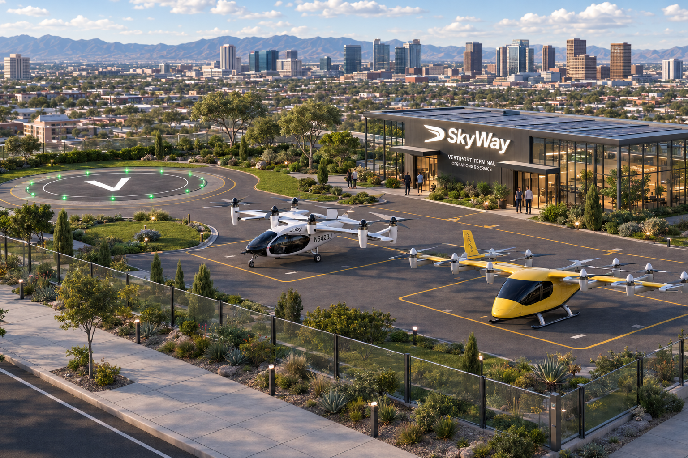
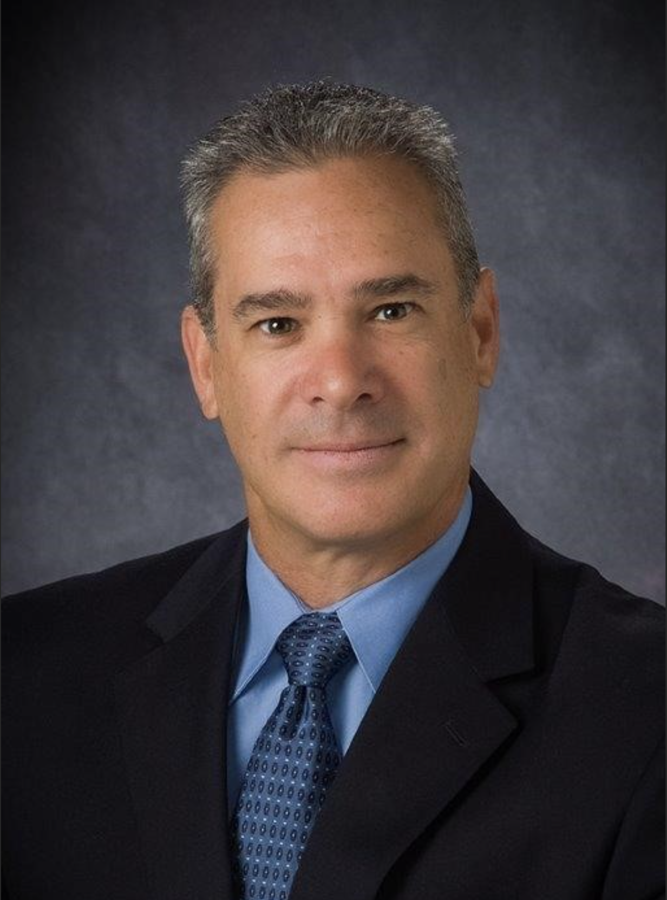

33.4484°N / 112.0740°W
AAM // eVTOL
SkyWay
Vertiports
SkyWay Vertiports is designing a safe, scalable, open vertiport infrastructure network across the Phoenix Metroplex; engineered on proven heliport standards, innovated for aviation's next evolution.
"Takeoffs are optional. Landings are mandatory."
To take off, an aircraft first needs a place to land. We are building those places.
SkyWay Vertiports is the forward-thinking ground layer that every eVTOL operator needs: a committed partner ensuring the safety, rapid turnaround, and customer support necessary for eVTOL transit through a definitive physical and digital backbone.
Across the Phoenix Metroplex, we're developing infrastructure that is platform-neutral by design and built to serve all eVTOL operators on equal terms, whether you are operating as an air taxi, air cargo, MEDIVAC, law enforcement, or privately owned.

Platform-neutral by design
One network, every operator. SkyWay builds shared infrastructure rather than a proprietary network; so the market, not a single manufacturer, decides who flies.
Fluent in the agencies that matter
We speak the language of the regulators who will define this industry, because we've spent careers operating inside it.
Heliport standards, proven in service
Vertiports engineered on the same rigor and precedent that already governs rotorwing operations — not reinvented, adapted.
Flight-test-grade judgment, applied to the ground.
SkyWay Vertiports was founded to bring disciplined, flight-test ideology and engineering protocols from over a hundred years of aviation experience to the ground infrastructure side of advanced air mobility; treating vertiports with the same rigor the industry already applies to the aircraft themselves.

Aviation executive and experimental test pilot with 36+ years of military and civilian flight experience across 35+ rotary and fixed-wing aircraft. Led 22+ years of flight-test programs advancing aircraft performance, mission capability, and operational readiness at the U.S. Army and Boeing.
Graduate of the U.S. Naval Test Pilot School, specializing in integration, test and evaluation of advanced aircraft, systems, and mission-critical components including: unmanned systems, manned/unmanned teaming, and complex system-of-systems integration for U.S. Government and international customers.
MBA (University of Phoenix, 2019). Proven track record defining and executing complex programs that deliver measurable business and mission success through cross-functional collaboration. Combines deep technical and operational expertise with strategic leadership capability.
Let's build the ground layer together.
Whether you're an eVTOL manufacturer, a landowner, a utility, an economic development authority, or an investor, SkyWay is engaging now on siting, power, and regulatory pathways across the Phoenix Metroplex.
Just learning about Advanced Air Mobility? We've written a short AAM primer for you to read. (PDF, ~10 min)